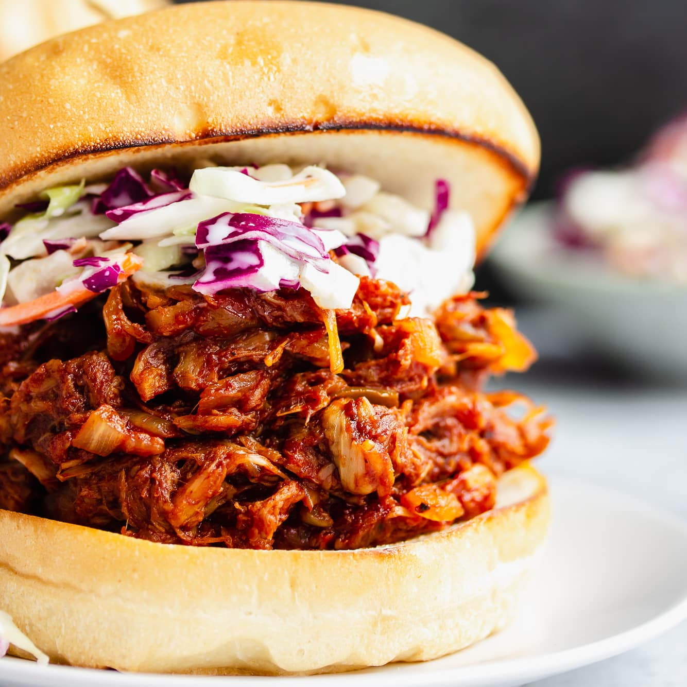

BBQ Jackfruit

Description
Jackfruit is a great vegan substitute for pulled pork. Its not only simple
to make but also tastes almost identical to pulled pork when simmered in BBQ sauce.
as a fan of pulled pork sandwiches for many years I instantly loved pulled jackfruit
sandwiches.
Ingredients
- 20-ounce can young green jackfruit
- 1 tablespoon olive oil
- 1 small sweet onion
- 1 cup BBQ sauce
- 1/2 cup water
- Sriracha hot sauce, to taste
- salt
For serving
- Burger buns
- Coleslaw
- Chips
- Pickles
Cooking Instructions
- Drain and rins the jackfruit from the can.
- head the olive oil in a large skillet over meadium head, then add
the onion and cook for 3-4 minutes until translucent.
- add the jackfruit, BBQ sauce and 1/2 cup water. Stir well to combine.
Cover and cook for 20 minuntes on low-medium head.
- Remove the lid and mash the jackfruit with a fork to give it a pulled like texture.
Add Sriracha and salt to taste.
- Finish by turning the head up to high and cook for another 10 mins. This crisps it up
and makes it extra tasty!
- Remove from head and serve on buns with coleslaw and a pickle.